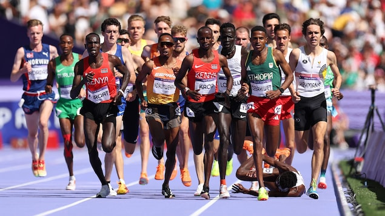

5000米选手艾哈迈德（Moh Ahmed，倒地者）在比赛还剩一圈多时摔倒。
照片：Getty Images / Hannah Peters
RCI
奥运至今，加拿大队在不同项目上都有出色表现，但同时也有不少令人意想不到的失落时刻。
短跑
上届奥运男子200米冠军的德格拉斯（Andre De Grasse），未能晋身今届决赛。
来自安大略省万锦市的29岁选手，是加拿大本届奥运的持旗手。上周日，他已失落于100米赛事。
德格拉斯200米准决赛中跑出20.41成绩：
女子三人篮球
加拿大女子三人篮球队一路走来不易，过去未受重视。队伍由阿尔伯塔省双胞胎姐妹凯瑟琳-普洛夫（Katherine Plouffe）和米歇尔-普洛夫（Michelle Plouffe）、博什（Kacie Bosch）和萨斯喀彻温省的克罗松（Paige Crozon）组成。
即使在没有教练下，篮球队仍能在2022年世界杯取得冠军，并在各大赛事中连连得胜。在辛苦取得加拿大首次奥运资格后，最终却在巴黎奥运与奖牌无缘，在铜牌赛中以16比13败给美国。
男子5000米
在有多达20名选手的第一轮预赛时，上届银牌得主、安省的艾哈迈德（Moh Ahmed）在最后一圈前倒下，他投诉前进受阻但无效，最终与决赛擦身而过。
加拿大田径协会事后遗憾地发表声明，指在多次番看录影后，认为艾哈迈德当时因踏在前面一名运动员的脚踝上导致摔倒，因此不能说是前进受阻。
男子体操全能
魁北克省的多尔奇（Félix Dolci)，挟着泛美运动会全能冠军衔头，雄心壮志首次参加奥运。惟在男子体操全能比赛单杠项目中，出现手套裂开罕有意外，令他掉到地上。
虽然获准再重新开始，并获得在场如雷掌声，但在第二次仍然从杠上失手掉下。21岁的他表示，无耐今次失手，会视为下届洛杉矶奥运的推动力。
即时收看奥运赛事及获得比赛资讯
CBC News et Radio-Canada. Adaptation en chinois par Donna Chan.
Début du widget Widget. Passer le widget ?
Fin du widget Widget. Retourner au début du widget ?Début du widget Widget. Passer le widget ?
Fin du widget Widget. Retourner au début du widget ?Début du widget Widget. Passer le widget ?
Fin du widget Widget. Retourner au début du widget ?Début du widget Widget. Passer le widget ?
Fin du widget Widget. Retourner au début du widget ?文章来源于RCI:加拿大奥运队的失落时刻